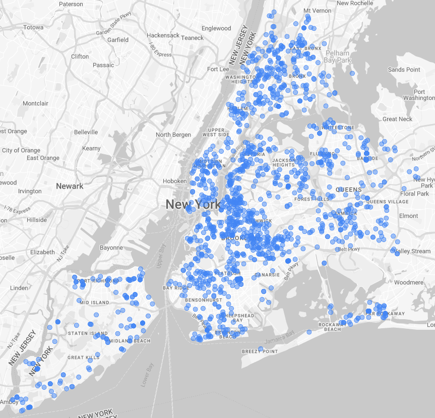
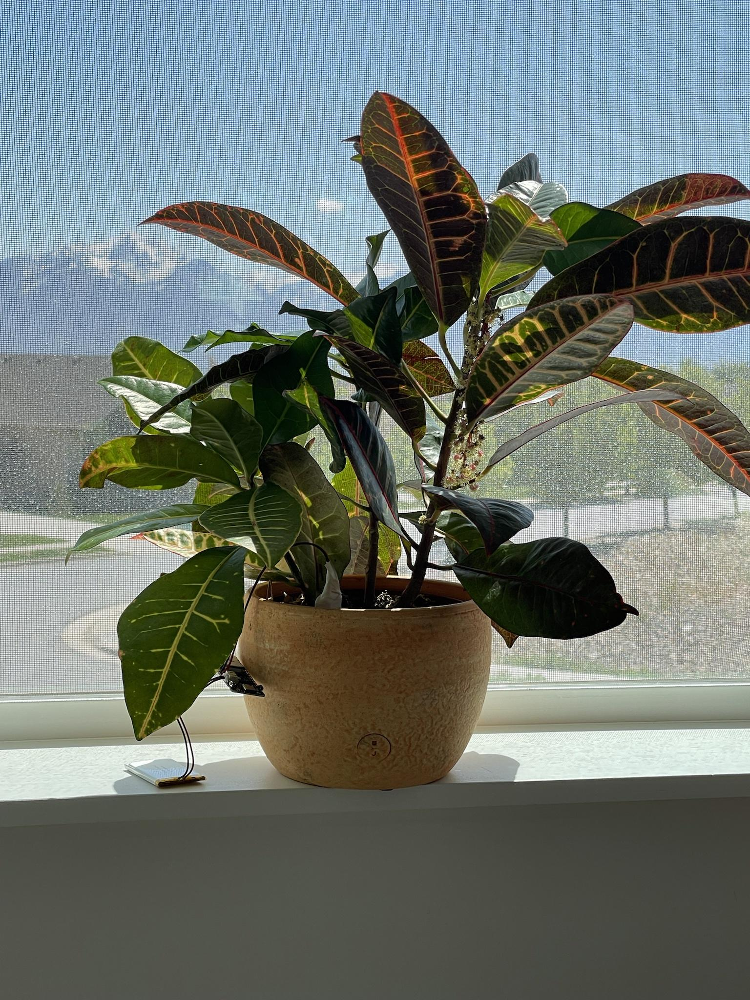

|
Joshua (Stapley) Montoya I’m a data-focused engineer with a background in systems engineering, handling data workflows and integration across complex systems. I have a strong interest in geospatial data, urban development, and the use of data to understand and visualize real-world systems. I hold a Master of Computer Science from the University of Illinois Urbana-Champaign and currently work as a systems engineer at L3Harris Technologies, supporting reliability and logistics data and analysis for large-scale aerospace programs. |
{kind=link}
Selected Data Projects |
|
 |
NYC Building Permits
Joshua Montoya 2025 project code Daily batch pipeline ingesting NYC building permits data from the Socrata Open Data API into BigQuery, enabling geospatial analysis and visualization of construction activity across the city. Orchestrated ingestion and transformation workflows using Airflow. Provisioned cloud infrastructure with Terraform (GCP). Stored raw data in GCS and modeled structured datasets in BigQuery. Built dashboards in Looker to explore spatial and temporal trends. |
|
 |
Plant Monitoring IoT Device
Joshua Montoya 2022 implementation details / project code / short demo Battery-powered IoT system for collecting environmental sensor data and transmitting it via Bluetooth LE to an iOS application. Designed and implemented embedded system using Arduino and Python. Built mobile interface in Swift to display time-series sensor data. Focused on low-power operation and reliable data transmission. |

|
Forest Species Segmentation in Aerial Imagery of Wasatch Mountains Using 3D
Convolutional Neural Network
Joshua Montoya 2023 implementation details / zoomable segmented map / project code Machine learning pipeline for classifying tree species from aerial imagery of the Wasatch Range using a 3D convolutional neural network. Created labeled training data from NAIP imagery. Trained CNN model on hyperspectral image cubes. Generated geospatial prediction maps and built a web interface for visualization. Achieved up to 84% accuracy on unseen test data. |
|
|